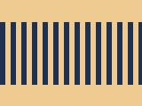

Maquette · données fictives
Mes fichiers › Documents
2020 › Série du 6 mai · 2 photos similaires

Confirmer la sélection Ignorer cette série
Dernière sauvegarde réussie aujourd’hui à 03 h · 42 Go occupés sur le disque principal
Modifier un quota